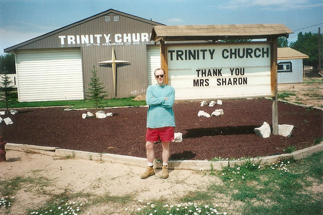
.
Just before we left Arizona we stopped at Fredonia where we had an ecclesiastical conversion.
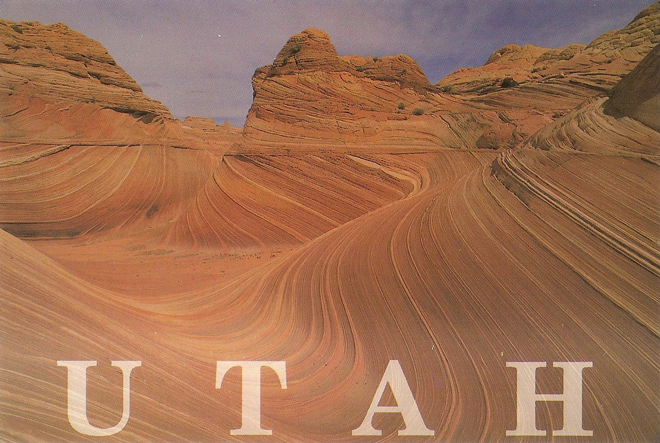
Moving then into Utah we saw the Vermillion Cliffs which consist of brilliant red rock plateaux of rolling slickrock which looks like petrified sand dunes. These were just west of Kanab and south of Springdale.
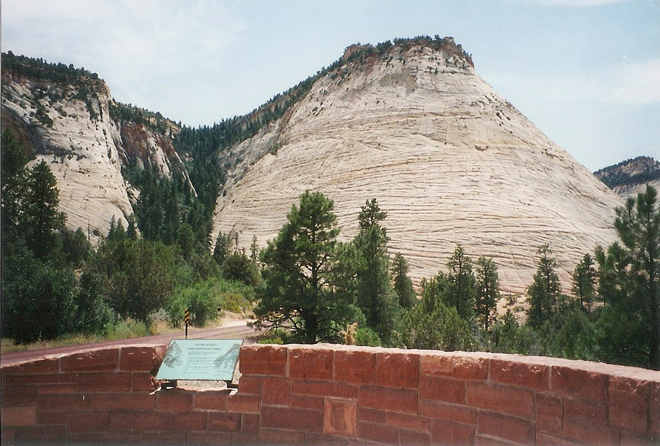
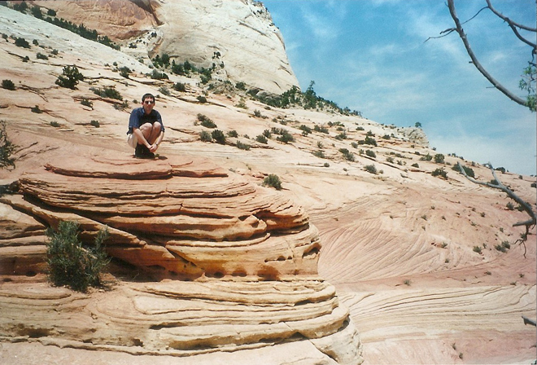
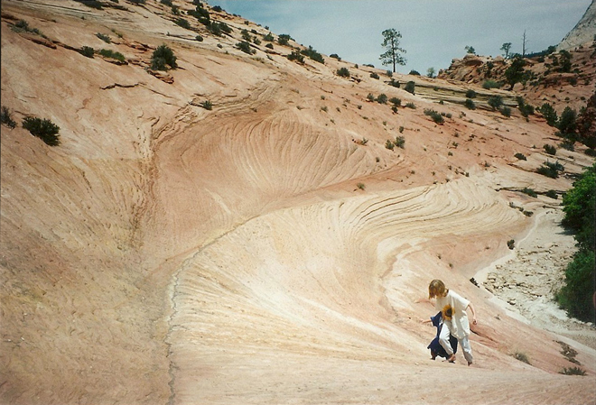
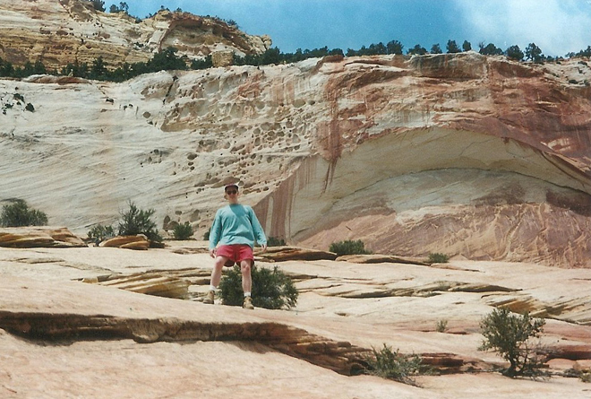
In Kanab we found the deliciously retro Treasure Trail Motel where we stayed for one night.
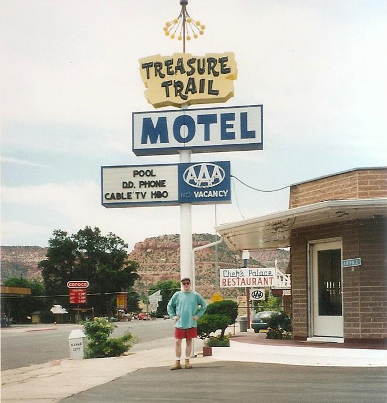
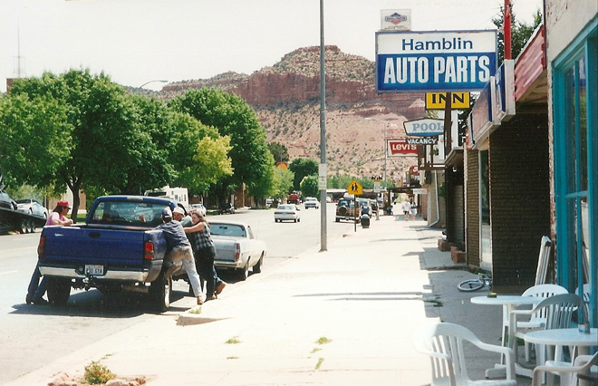
In 1909, President William Howard Taft named the area 'Mukuntuweap' National Monument in order to protect the canyon but, in 1918, the acting director of the newly created National Park Service, Horace Albright, drafted a proposal to enlarge the existing monument and change the park's name to Zion National Monument, 'Zion' being a term used by the Mormons. It was believed that Spanish or Indian names would deter visitors who, if they could not pronounce the name of a place, might not bother to visit it. In November 1919, Congress redesignated the monument as Zion National Park, and the act was signed by President Woodrow Wilson.
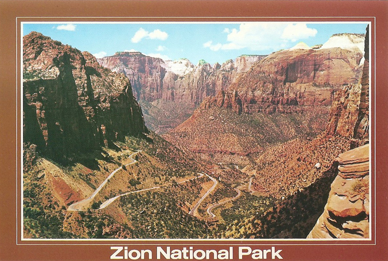
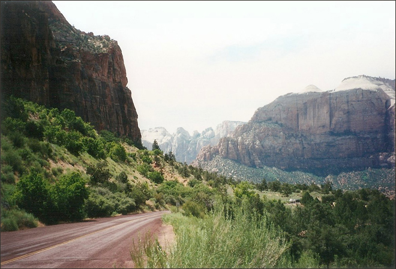
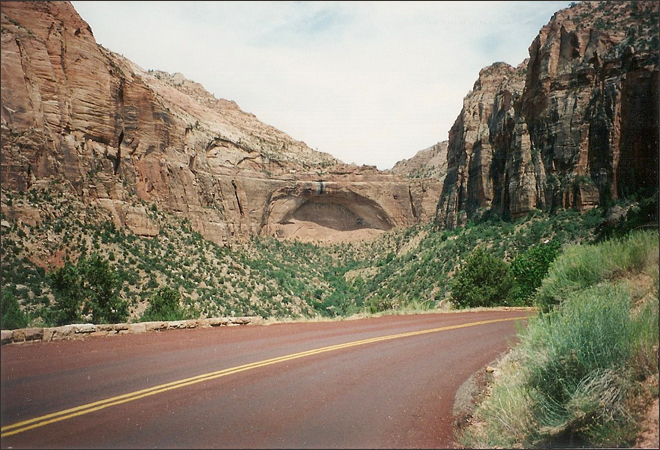
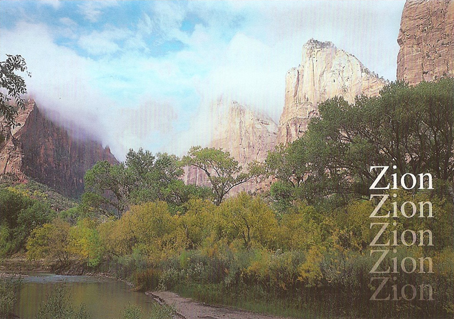
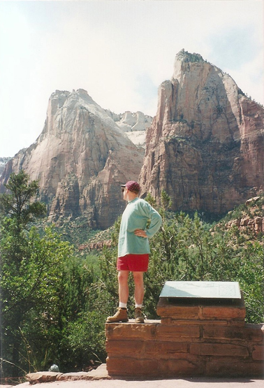
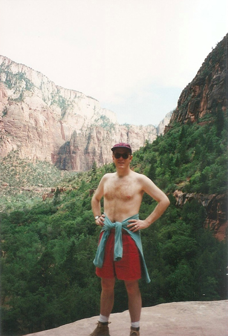
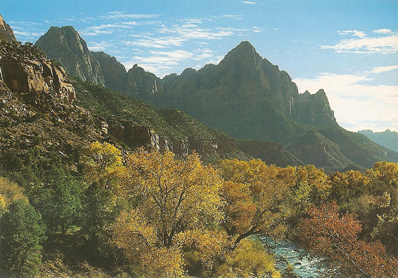
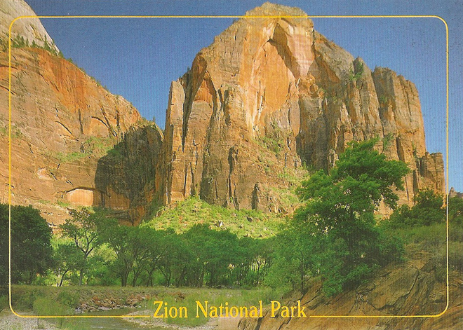
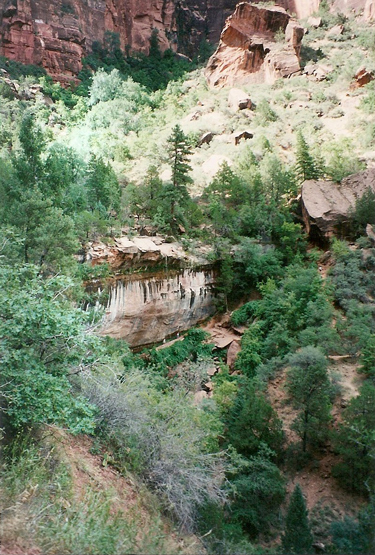
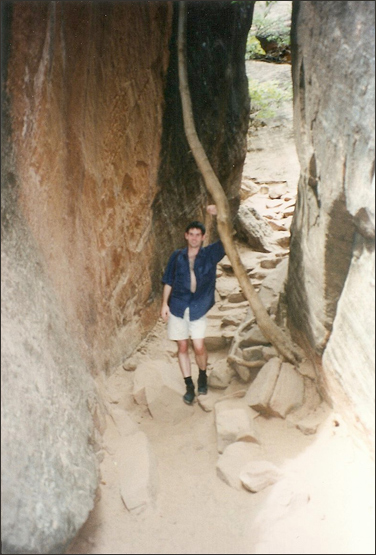
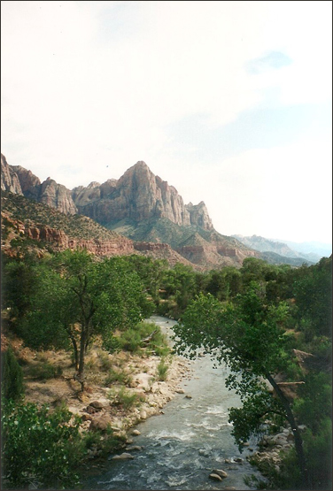
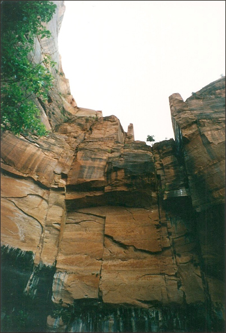
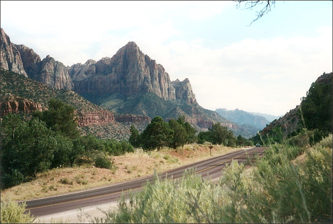
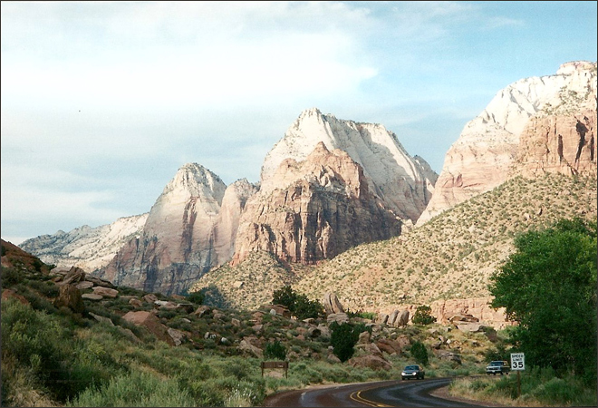